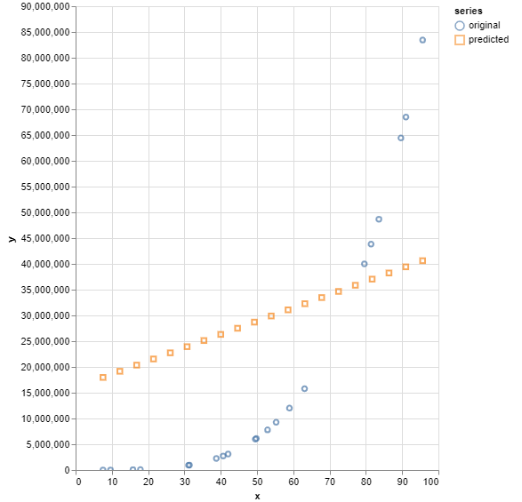

Dokumentation
Aufgabenstellung
Die Aufgabe bestand darin, ein Feed-Forward-Neural-Network (FFNN) zur Regression der folgenden reellwertigen Funktion zu nutzen.
Die Anwendung soll dabei interaktiv Input-Daten vom Nutzer vorhersagen können. Er kann dabei Werte angeben, die vorhergesagt werden sollen.
Als Objektivfunkton/Loss soll der MSE verwendet werden. Input- und Output-Neuronen sollen linear sein. Als Aktivierungsfunktion soll demnach „none“ (y=x) eingesetzt werden.
Experimente und Fragestellungen
Die Größe des Netzwerkes und die Anzahl N der Trainingsdaten sollen so eingestellt werden, dass Sie die Phänomene Under- und Overfitting simulieren können. Zum Erzeugen der Trainingsdaten sollen N zufällige gleichverteilte x-Werte gesampelt und y(x) dazu berechnet werden.
Es soll anhand unterschiedlichen Trainingsdaten, der Netzwerkarchitektur und der Parameter der Neuronen und des Lernalgorithmus experimentiert werden, wobei die folgenden Punkte explizit einstellbar sind.
- Anzahl und Auswahl der N Trainingsdatenpunkte
- Anzahl der Hidden Layer und Neuronen
- Initialisierung der Gewichte
- Aktivierungsfunktionen
- Lernrate und Optimizer
- Anzahl der Trainings-Epochs
Es soll beantwortet werden, was das beste Ergebnis ist, dass so erzielbar ist. Dies soll dokumentiert und die Parameter und Einstellungen begründet sowie, in dem Zusammenhang, die Begriffe Bias und Varianz erklärt werden.
Umsetzung
Zuerst habe ich mir die reellwertige Funktion y(x) = (x+0.8)*(x-0.2)*(x-0.3)*(x-0.6) über WolframAlpha[1] plotten lassen, dabei ergeben sich folgende grafische Darstellungen.

Anhand des Tutorials „TensorFlow.js — Making Predictions from 2D Data“[3] und mithilfe der TensorFlow-Dokumentation[4] habe ich den Code für die Anwendung erstellt.
Zum Erzeugen der Trainingsdaten werden N zufällige gleichverteilte x-Werte gesampelt und y(x) dazu berechnet.
Über die Anwendung ist es möglich, die Anzahl und Auswahl der N Trainingsdatenpunkte, die Anzahl der Hidden Layer und Neuron, die Initialisierung der Gewichte, die Aktivierungsfunktionen, Lernrate und Optimizer sowie die Anzahl der Trainings-Epochs einzustellen. Ein Nutzer kann außerdem einen Wert angeben, der ihm darauf vorhergesagt wird.
Über die einstellbaren Parameter habe ich verschiedene Experimente durchgeführt. Ich habe darüber versucht, die Phänomene Under- und Overfitting zu simulieren sowie die Anwendung auf Einstellungen für gute Ergebnisse untersucht.
Als Objektivfunkton/Loss wurde dabei der MSE verwendet. Input- und Output-Neuronen sind linear.
Ergebnisse
Für gute Ergebnisse haben sich bei meiner Umsetzung die folgenden Werte bewährt.
- Anzahl der N Trainingsdatenpunkte: 500
- Auswahl der N Trainingsdatenpunkte: -1 bis 1
- Anzahl der Hidden Layer: 2
- Anzahl der Neuronen: 50
- Aktivierungsfunktion: ReLU
- Lernrate: 0,01
- Optimizer: Adam
- Anzahl der Trainings-Epochs: 50
Nach einigen Experimenten hat sich herausgebildet, dass diese Werte sich gut aber nicht zu perfekt an die Kurve annähern, weshalb kein Under- oder Overfitting vorherrscht.

Um ein Underfitting-Phänomen hervorzurufen, wurden folgende Werte verwendet.
- Anzahl der N Trainingsdatenpunkte: 20
- Auswahl der N Trainingsdatenpunkte: 0 bis 100
- Anzahl der Hidden Layer: 0
- Anzahl der Neuronen: 10
- Aktivierungsfunktion:ReLU
- Lernrate: 0,01
- Optimizer: Adam
- Anzahl der Trainings-Epochs: 20
Hier spielt vor allem die geringe Anzahl an Hidden-Layer eine Rolle sowie die Auswahl der Trainingsdatenpunkte, welche einen nicht sehr repräsentativen Bereich widerspiegeln. Auch die Anzahl der Neuronen ist relativ gering, sowie die Anzahl der Trainingsdatenpunkte, weshalb diese auch nicht sehr repräsentativ sind. Ebenso bedeutet eine kleine Epochen-Anzahl eine geringe Anpassung an die Trainingsdaten.
Um ein Overfitting-Phänomen hervorzurufen, wurden folgende Werte verwendet.
- Anzahl der N Trainingsdatenpunkte: 1000
- Auswahl der N Trainingsdatenpunkte: -1 bis 1
- Anzahl der Hidden Layer: 10
- Anzahl der Neuronen: 20
- Aktivierungsfunktion: ReLU
- Lernrate: 0,01
- Optimizer: Adam
- Anzahl der Trainings-Epochs: 50
Um ein Overfitting hervorzurufen sind Daten notwendig, welche ungefähr gegenteilig der Werte des Underfittings gestaltet sind. Vor allem spielen die Auswahl eines repräsentativen Trainingsdatenbereichs, mehr Datenpunkte und eine hohe Anzahl an Hidden-Layers eine Rolle.

Bias und Varianz
Overfitting bedeutet eine annähernd perfekte vorhersage oder Anpassung des Modells an jeden Punkt der Trainingsdaten. Ein komplexes, parameterreiches Modell, also ein neuronales Netz mit sehr vielen Schichten und sehr vielen Gewichten merkt sich im Extremfall alle Datenpunkte und interpoliert zwischen ihnen.
Liegt andersherum beispielsweise ein Gewicht vom Input direkt zum Output vor, würden ein lineares Modell gelernt werden, in sich das Output-Unit nur einem Input mit einem Parameter und einem Bias ergibt. In dem Fall würde eine Gerade in die Daten fitten, sprich die Daten würden underfittet. Die Komplexität des Modells reicht demnach nicht aus, um die Daten zu repräsentieren.
Beide Modelle würden hohe Generalisierungsfehler bedeuten. Das Underfittete würde zu stark, das Overfittete zu wenig generalisieren.
Komplexe Modelle haben generell eine große Varianz, da sie sich mit jedem neuen Trainingsdatensatz oder Sample stark verändern. Es besteht also eine große Abhängigkeit von den Trainingsdaten. Jedoch fittet es die Daten sehr stark, es liegt also eine hohe Datenapproximation vor beziehungsweise es hat ein geringes Bias, welcher die Abweichung des Modells von der Fit-Funktion, also der Ground Truth, angibt. Bei zu einfachen Modellen ist es genau andersherum.
Je mehr Daten zu Verfügung stehen, desto mehr nimmt die Varianz ab – das sollte vor allem bei großen und komplexen Modellen, bei denen die Varianz hoch ist, beachtet werden. Wenn die Zielfunktion sehr komplex ist, erhöht sich der Bias – das sollte wiederrum bei einfachen Modellen beachtet werden, denn komplexere reduzieren den Bias.
Demnach ist es ein Ziel, dass das Modell optimal generalisiert, um neue Datenpunkte, sprich Testdaten, richtig vorherzusagen. Die Komplexität des Modells sollte dabei zur Komplexität der Zielfunktion passen. Um das zu gewährleisten, sollte die Komplexität des Problems und die vorhandenen Daten bekannt sein, um das Modell entsprechend auszuwählen.[2]
Quellen
[1] WolframAlpha, https://www.wolframalpha.com/input/?i=%28x%2B0.8%29*%28x-0.2%29*%28x-0.3%29*%28x-0.6%29, zuletzt abgerufen am 29.05.2021.
[2] Deep Learning Online Studienmodul, Prof. Dr. Felix Gers, zuletzt abgerufen am 29.05.2021.
[3] TensorFlow.js — Making Predictions from 2D Data, Yannick Assogba, https://www.tensorflow.org/js/tutorials/training/linear_regression, zuletzt abgerufen am 31.05.2021.
[4] TensorFlow JavaScript, https://www.tensorflow.org/js, zuletzt abgerufen am 31.05.2021.